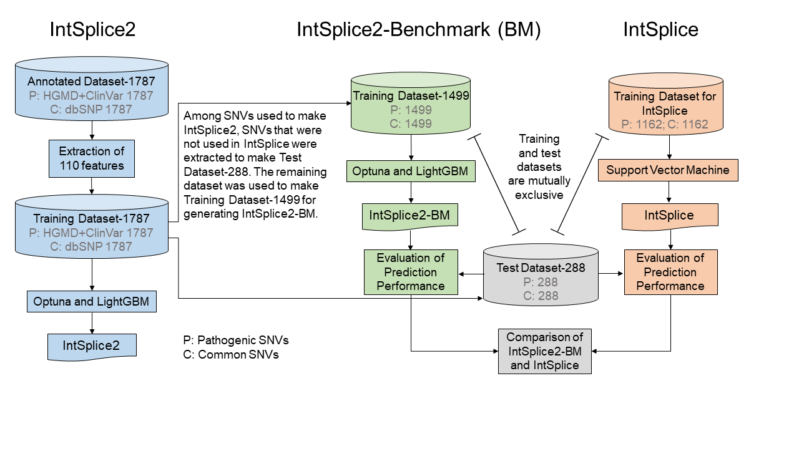

IntSplice ver. 2.0 is a tool to predict a splicing consequence of an SNV at intron positions -50 to -3 close the 3' end of an intron of the human genome.
Publication
Please cite: Jun-ichi Takeda, Sae Fukami, Akira Tamura, Akihide Shibata, and Kinji Ohno. “IntSplice2: Prediction of the Splicing Effects of Intronic Single-Nucleotide Variants Using LightGBM Modeling” Front Genet. 2021 Jul 19;12:701076. (PMID: 34349788).
Materials and Methods
-
A total of 1,787 pathogenic SNVs located from intronic positions -50 to -3 according to the transcript annotations of Ensembl release 101 were extracted from the Human Gene Mutation Database (HGMD) Professional release 2020/04 with mutation category DM (disease-causing mutation) and ClinVar release 2021/03/15 with CLNVC = single_nucleotide_variant and intron_variant, and CLNSIG = Pathogenic on human genome assembly GRCh38/hg38.
-
A total of 5,406 common SNVs with a minor allele frequency (MAF) between 0.01 and 0.50 located at the same positions as pathogenic SNVs were extracted from the dbSNP build 151. Among them, 1,787 common SNVs were randomly selected.
-
A total of 110 features (Table 1) representing splicing cis-elements were used to make gradient boosting (GB) models with a machine learning library, Optuna and LightGBM, on Python version 3.8 (Figure 1).
-
To achieve quick response, all possible SNVs located from intronic positions -50 to -3 on the human genome were pre-processed by IntSplice ver. 2.0. The web service program extracts scores from the pre-processed dataset. The pre-processed genome-wide scores of IntSplice ver. 2.0 are also available under the "Download" tab.
Table 1. List of 110 features.
| Features |
3'/Ex/5' |
Position |
| Best branchpoint sequence (BPS)-related x3 |
3' |
Int-50 to Int-3 |
| Polypyrimidine (PPT)-related x10 |
3' |
Int-50 to Int-3 |
| Best BPS-PPT-related x6 |
3' |
Int-50 to Int-3 |
| Nucleotide at Int-3 x4 |
3' |
Int-3 |
| 1st nucleotide of exon x4 |
Ex |
Ex+1 |
| Presence of A or G at Int-7, Int-6, or Int-5 |
3' |
Int-7 to Int-5 |
| Ratio of purines (A/G) at Int-20 to Int-8 |
3' |
Int-20 to Int-8 |
| Number of G nucleotides at Int-12 to Int-3 |
3' |
Int-12 to Int-3 |
| Number of GGG trinucleotides at Int-12 to Int-3 |
3' |
Int-12 to Int-3 |
| SD-Score |
Ex/5' |
Ex-3 to Int+6 |
| Exon length |
Ex |
Ex |
| MaxEntScan::score3ss |
3'/Ex |
Int-20 to Ex+3 |
| MaxEntScan::score5ss |
Ex/5' |
Ex-3 to Int+6 |
| Shapiro Senapathy score at 3' ss |
3'/Ex |
Int-14 to Ex+1 |
| Shapiro Senapathy score at 5' ss |
Ex/5' |
Ex-2 to Int+6 |
| Gain of GT dinucleotide |
3' |
Int-50 to Int-3 |
| Gain of AG dinucleotide |
3' |
Int-50 to Int-3 |
| Sum SpliceAid2 score of RNA-binding protein (RBP) x71 |
3'/Ex/5' |
Int-50 to Int+50 |

Figure 1. Overview of strategies for IntSplice2 and IntSplice2-Benchmark (BM). IntSplice2-BM is the model to compare with IntSplice which is the previous version of IntSplice2 by using the test data which does not include in the both models.